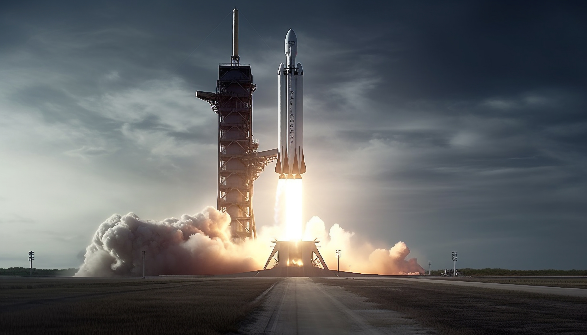

SpaceX
SpaceX prévoit le premier décollage de la fusée Falcon Heavy pour le 6 février Le vol inaugural du lanceur lourd Falcon Heavy, prévu initialement pour l'automne, se déroulera le mardi 6 février, annonce SpaceX. Fin janvier, l'entreprise américaine a effectué avec succès un test de mise à feu statique. Dans le domaine de l’astronautique, il faut parfois composer avec des impondérables. Elon Musk s’en est rendu compte avec Falcon Heavy. Sa société spécialisée dans le vol spatial, SpaceX, devait initialement procéder au vol inaugural de sa toute première fusée lourde au cours de l’automne 2017, en novembre. Mais le 1er décembre est arrivé et aucun décollage n’a eu lieu.
En savoir plus